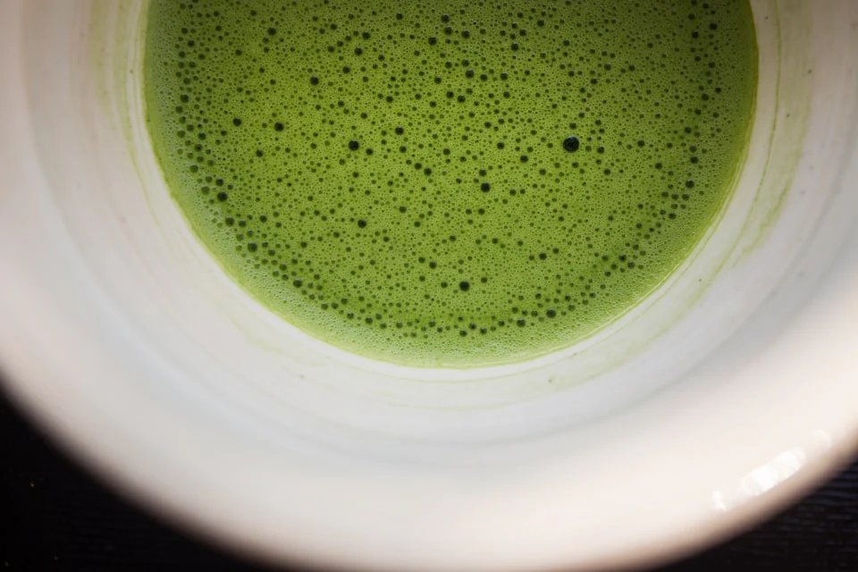

The Origins of Matcha

Matcha, with its vibrant green color and unique flavor, is loved around the world as an iconic
part of Japanese culture. Beyond being a simple drink, matcha’s rich history and cultural
significance have captivated people for centuries.
However, the origins of matcha are not exclusively Japanese; they are closely linked to Chinese
tea culture. In this article, we’ll explore the roots of matcha, its cultural importance, its
development in Japan, and its historical journey up to the present day.
Tracing it Back to Ancient Chinese Tea Culture
The origins of matcha can be traced back to Chinese tea culture. Tea drinking began in China long ago, initially as a medicinal practice.During the Tang Dynasty (618–907), significant changes in tea preparation and drinking methods emerged, making “compressed tea” or “brick tea” common.
Tea held a purpose beyond mere refreshment, valued for its role in spiritual cleansing and health maintenance, which made it a luxury product mostly reserved for the nobility.
Since brick tea was often ground into powder for consumption, it is considered an important precursor to modern-day matcha.
However, over time, powdered tea culture which began with the brick tea faded in China, evolving into styles resembling today’s loose-leaf green teas. Meanwhile, this powdered tea tradition traveled to Japan, where it took on a distinct evolution.
Tracing it Back to Ancient Chinese Tea Culture
In Japan, the history of matcha dates back to the Kamakura period, when samurai-led rule emerged.During this time, Zen Buddhist monk Eisai brought back tea seeds from China, along with the method of grinding tea leaves and whisking them with hot water. This event is regarded as the beginning of Japanese matcha culture.
Eisai began cultivating tea in Japan and wrote Kissa Yojoki (The Book of Tea), in which he documented the health benefits and cultivation techniques he learned in China. He presented this knowledge to the Zen monks and even introduced tea to the shogun, promoting it widely.
Afterward, through the Muromachi period, which followed the Kamakura period, matcha spread among the samurai class. Matcha was a much-loved drink among the warriors who survived the bloodshed of war. It is said that they drank it to recover from mental trauma, improve their concentration, elevate their moods, and heal themselves.
Tea gatherings with Matcha became a popular form of social engagement during this era, creating significant opportunities for interaction among nobles and warriors.
Thus, matcha is thought to have developed not only as a mere indulgence but also as an activity with cultural value. Through these transformations, matcha became established as an important element of Japanese culture, and by the late Muromachi period, the foundation for the formalization of the tea ceremony had been laid.
In the Edo period, matcha became widely available to the common people. With the onset of the Meiji era and increased foreign interaction, matcha gained international recognition, a trend that has contributed to the global popularity of matcha today.
The Role of Matcha in Modern Times
In recent years, matcha has gained global recognition not only for its traditional value but also for its health benefits. Particularly valued are its high levels of catechins, known for their antioxidant properties, and theanine, which provides a calming effect.Thanks to these health benefits, matcha has gained popularity in the West as a "superfood" and is now incorporated into various products such as matcha lattes, smoothies, and ice creams, becoming part of daily life.
Meanwhile, there has been a growing interest among foreign visitors captivated by matcha's historical background and cultural significance, leading to an increased interest in the tea ceremony. Many foreign tourists participate in Japanese tea ceremony classes, making the experience of Japanese culture through matcha a global trend.